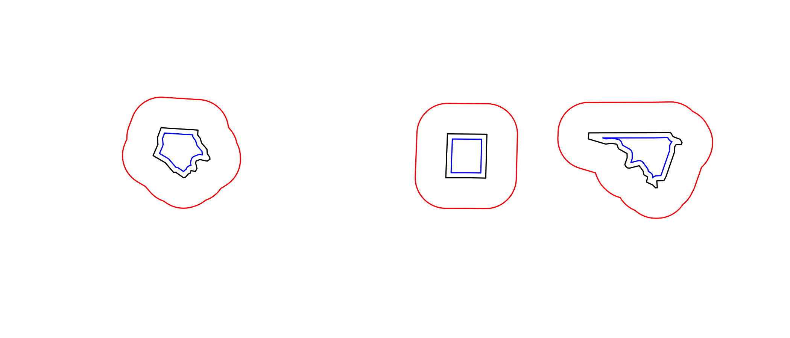
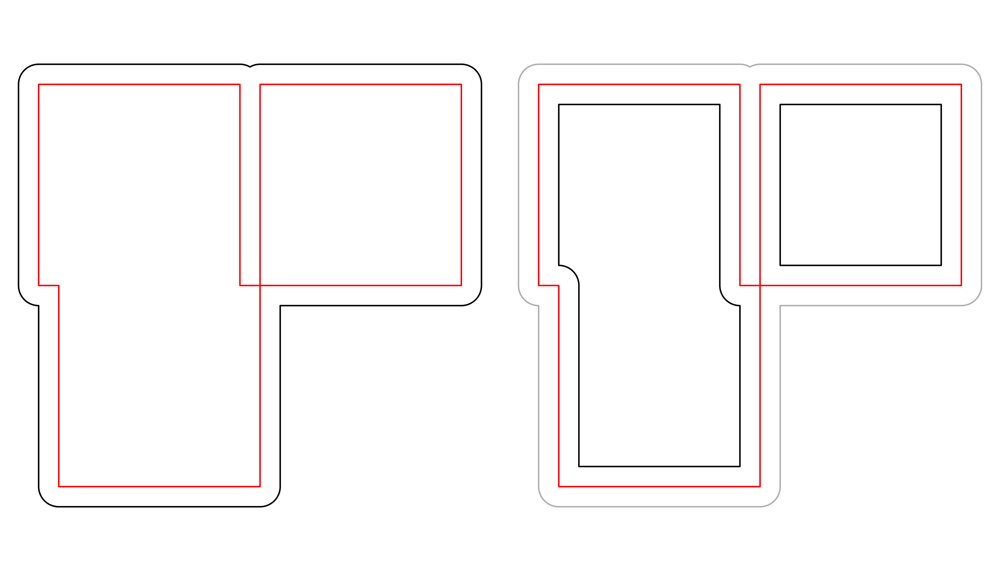
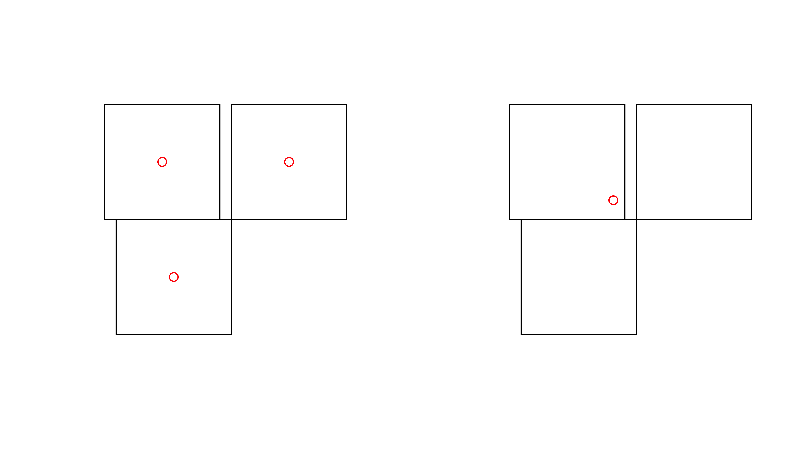
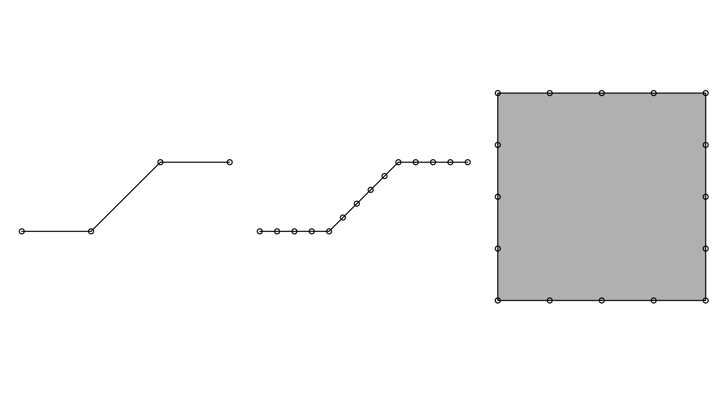

Working with Spatial Data
The R Script associated with this page is available here. Download this file and open it (or copy-paste into a new script) with RStudio so you can follow along.
Setup
You may need to install a few of these packages with install.packages() or using the GUI. Note, much of the material below was taken from the sf vignettes available here.
Load packages
library(rgdal)
library(rgeos)
library(sf)
library(ggplot2)
library(dplyr)
library(tidyr)
library(maptools)Background
There are currently two main approaches in R to handle geographic vector data.
The sp package
The first package to provide classes and methods for spatial data types in R is called sp1. Development of the sp package began in the early 2000s in an attempt to standardize how spatial data would be treated in R and to allow for better interoperability between different analysis packages that use spatial data. The package (first release on CRAN in 2005) provides classes and methods to create points, lines, polygons, and grids and to operate on them. About 350 of the spatial analysis packages use the spatial data types that are implemented in sp i.e. they “depend” on the sp package and many more are indirectly dependent.
The foundational structure for any spatial object in sp is the Spatial class. It has two “slots” (new-style S4 class objects in R have pre-defined components called slots):
a bounding box
a CRS class object to define the Coordinate Reference System
This basic structure is then extended, depending on the characteristics of the spatial object (point, line, polygon).
To build up a spatial object in sp we could follow these steps:
I. Create geometric objects (topology)
Points (which may have 2 or 3 dimensions) are the most basic spatial data objects. They are generated out of either a single coordinate or a set of coordinates, like a two-column matrix or a dataframe with a column for latitude and one for longitude.
Lines are generated out of Line objects. A Line object is a spaghetti collection of 2D coordinates2 and is generated out of a two-column matrix or a dataframe with a column for latitude and one for longitude. A Lines object is a list of one or more Line objects, for example all the contours at a single elevation.
Polygons are generated out of Polygon objects. A Polygon object is a spaghetti collection of 2D coordinates with equal first and last coordinates and is generated out of a two-column matrix or a dataframe with a column for latitude and one for longitude. A Polygons object is a list of one or more Polygon objects, for example islands belonging to the same country.
See here for a very simple example for how to create a Line object:
ln <- Line(matrix(runif(6), ncol=2))
str(ln)## Formal class 'Line' [package "sp"] with 1 slot
## ..@ coords: num [1:3, 1:2] 0.409 0.663 0.971 0.293 0.988 ...See here for a very simple example for how to create a Lines object:
lns <- Lines(list(ln), ID = "a") # this contains just one Line!
str(lns)## Formal class 'Lines' [package "sp"] with 2 slots
## ..@ Lines:List of 1
## .. ..$ :Formal class 'Line' [package "sp"] with 1 slot
## .. .. .. ..@ coords: num [1:3, 1:2] 0.409 0.663 0.971 0.293 0.988 ...
## ..@ ID : chr "a"II. Create spatial objects Spatial* object (* stands for Points, Lines, or Polygons).
This step adds the bounding box (automatically) and the slot for the Coordinate Reference System or CRS (which needs to be filled with a value manually). SpatialPoints can be directly generated out of the coordinates. SpatialLines and SpatialPolygons objects are generated using lists of Lines or Polygons objects respectively (more below).
See here for how to create a SpatialLines object:
sp_lns <- SpatialLines(list(lns))
str(sp_lns)## Formal class 'SpatialLines' [package "sp"] with 3 slots
## ..@ lines :List of 1
## .. ..$ :Formal class 'Lines' [package "sp"] with 2 slots
## .. .. .. ..@ Lines:List of 1
## .. .. .. .. ..$ :Formal class 'Line' [package "sp"] with 1 slot
## .. .. .. .. .. .. ..@ coords: num [1:3, 1:2] 0.409 0.663 0.971 0.293 0.988 ...
## .. .. .. ..@ ID : chr "a"
## ..@ bbox : num [1:2, 1:2] 0.40923 0.00417 0.97139 0.98836
## .. ..- attr(*, "dimnames")=List of 2
## .. .. ..$ : chr [1:2] "x" "y"
## .. .. ..$ : chr [1:2] "min" "max"
## ..@ proj4string:Formal class 'CRS' [package "sp"] with 1 slot
## .. .. ..@ projargs: chr NAIII. Add attributes (Optional:)
Add a data frame with attribute data, which will turn your Spatial* object into a Spatial*DataFrame object. The points in a SpatialPoints object may be associated with a row of attributes to create a SpatialPointsDataFrame object. The coordinates and attributes may, but do not have to be keyed to each other using ID values.
SpatialLinesDataFrame and SpatialPolygonsDataFrame objects are defined using SpatialLines and SpatialPolygons objects and data frames. The ID fields are here required to match the data frame row names.
See here for how to create a SpatialLinesDataframe:
dfr <- data.frame(id = "a", use = "road", cars_per_hour = 10) # note how we use the ID from above!
sp_lns_dfr <- SpatialLinesDataFrame(sp_lns, dfr, match.ID = "id")
str(sp_lns_dfr)## Formal class 'SpatialLinesDataFrame' [package "sp"] with 4 slots
## ..@ data :'data.frame': 1 obs. of 3 variables:
## .. ..$ id : Factor w/ 1 level "a": 1
## .. ..$ use : Factor w/ 1 level "road": 1
## .. ..$ cars_per_hour: num 10
## ..@ lines :List of 1
## .. ..$ :Formal class 'Lines' [package "sp"] with 2 slots
## .. .. .. ..@ Lines:List of 1
## .. .. .. .. ..$ :Formal class 'Line' [package "sp"] with 1 slot
## .. .. .. .. .. .. ..@ coords: num [1:3, 1:2] 0.409 0.663 0.971 0.293 0.988 ...
## .. .. .. ..@ ID : chr "a"
## ..@ bbox : num [1:2, 1:2] 0.40923 0.00417 0.97139 0.98836
## .. ..- attr(*, "dimnames")=List of 2
## .. .. ..$ : chr [1:2] "x" "y"
## .. .. ..$ : chr [1:2] "min" "max"
## ..@ proj4string:Formal class 'CRS' [package "sp"] with 1 slot
## .. .. ..@ projargs: chr NAA number of spatial methods are available for the classes in sp. Common ones include:
| function | and what it does |
|---|---|
bbox() |
returns the bounding box coordinates |
proj4string() |
sets or retrieves projection attributes using the CRS object. |
CRS() |
creates an object of class of coordinate reference system arguments |
spplot() |
plots a separate map of all the attributes unless specified otherwise |
coordinates() |
set or retrieve the spatial coordinates. For spatial polygons it returns the centroids. |
over(a, b) |
used for example to retrieve the polygon or grid indices on a set of points |
spsample() |
sampling of spatial points within the spatial extent of objects |
The sf package
The second package, first released on CRAN in late October 2016, is called sf3. It implements a formal standard called “Simple Features” that specifies a storage and access model of spatial geometries (point, line, polygon). A feature geometry is called simple when it consists of points connected by straight line pieces, and does not intersect itself. This standard has been adopted widely, not only by spatial databases such as PostGIS, but also more recent standards such as GeoJSON.
Simple features or simple feature access refers to a formal standard (ISO 19125-1:2004) that describes how objects in the real world can be represented in computers, with emphasis on the spatial geometry of these objects. It also describes how such objects can be stored in and retrieved from databases, and which geometrical operations should be defined for them.
The standard is widely implemented in spatial databases (such as PostGIS), commercial GIS (e.g., ESRI ArcGIS) and forms the vector data basis for libraries such as GDAL. A subset of simple features forms the GeoJSON standard.
If you work with PostGis or GeoJSON you may have come across the WKT (well-known text) format, for example like these:
POINT (30 10)
LINESTRING (30 10, 10 30, 40 40)
POLYGON ((30 10, 40 40, 20 40, 10 20, 30 10))sf implements this standard natively in R. Data are structured and conceptualized very differently from the sp approach.
In sf spatial objects are stored as a simple data frame with a special column that contains the information for the geographic coordinates. That special column is a list with the same length as the number of rows in the data frame. Each of the individual list elements then can be of any length needed to hold the coordinates that correspond to an individual feature.
To create a spatial object manually the basic steps would be:
I. Create geometric objects (topology)
Geometric objects (simple features) can be created from a numeric vector, matrix or a list with the coordinates. They are called sfg objects for Simple Feature Geometry.
See here for an example of how a LINESTRING sfg object is created:
lnstr_sfg <- st_linestring(matrix(runif(6), ncol=2))
class(lnstr_sfg)## [1] "XY" "LINESTRING" "sfg"II. Combine all individual single feature objects for the special column.
In order to work our way towards a data frame for all features we create what is called an sfc object with all individual features, which stands for Simple Feature Collection. The sfc object also holds the bounding box and the projection information.
See here for an example of how a sfc object is created:
(lnstr_sfc <- st_sfc(lnstr_sfg)) # just one feature here## Geometry set for 1 feature
## geometry type: LINESTRING
## dimension: XY
## bbox: xmin: 0.06690928 ymin: 0.397197 xmax: 0.68381 ymax: 0.891195
## epsg (SRID): NA
## proj4string: NA## LINESTRING (0.06690928 0.6273856, 0.68381 0.891...class(lnstr_sfc) ## [1] "sfc_LINESTRING" "sfc"III. Add attributes.
We now combine the dataframe with the attributes and the simple feature collection. See here how its done.
(lnstr_sf <- st_sf(dfr , lnstr_sfc))## Simple feature collection with 1 feature and 3 fields
## geometry type: LINESTRING
## dimension: XY
## bbox: xmin: 0.06690928 ymin: 0.397197 xmax: 0.68381 ymax: 0.891195
## epsg (SRID): NA
## proj4string: NA
## id use cars_per_hour lnstr_sfc
## 1 a road 10 LINESTRING (0.06690928 0.62...class(lnstr_sf)## [1] "sf" "data.frame"There are many methods available in the sf package, to find out use methods(class="sp")
Here are some of the other highlights of sf you might be interested in:
- provides fast I/O, particularly relevant for large files
- directly reads from and writes to spatial databases such as PostGIS
- stay tuned for a new
ggplotrelease that will be able to read and plot thesfformat without the need of conversion to a data frame, like thespformat
Note that sp and sf are not the only way spatial objects are conceptualized in R. Other spatial packages may use their own class definitions for spatial data (for example spatstat). Usually you can find functions that convert sp and increasingly sf objects to and from these formats.
sf: objects with simple features
As we usually do not work with geometries of single simple features, but with datasets consisting of sets of features with attributes, the two are put together in sf (simple feature) objects. The following command reads the nc dataset from a file that is contained in the sf package:
file=system.file("shape/nc.shp", package="sf")
file## [1] "/Library/Frameworks/R.framework/Versions/3.4/Resources/library/sf/shape/nc.shp"nc <- st_read(file)## Reading layer `nc' from data source `/Library/Frameworks/R.framework/Versions/3.4/Resources/library/sf/shape/nc.shp' using driver `ESRI Shapefile'
## Simple feature collection with 100 features and 14 fields
## geometry type: MULTIPOLYGON
## dimension: XY
## bbox: xmin: -84.32385 ymin: 33.88199 xmax: -75.45698 ymax: 36.58965
## epsg (SRID): 4267
## proj4string: +proj=longlat +datum=NAD27 +no_defs(Note that you will rarely use system.file but instead give a filename directly, and that shapefiles consist of more than one file, all with identical basename, which reside in the same directory.)
The short report printed gives the file name, the driver (ESRI Shapefile), mentions that there are 100 features (records, represented as rows) and 14 fields (attributes, represented as columns). This object is of class
class(nc)## [1] "sf" "data.frame"meaning it extends (and “is” a) data.frame, but with a single list-column with geometries, which is held in the column with name
attr(nc, "sf_column")## [1] "geometry"If we print the first three features, we see their attribute values and an abridged version of the geometry
print(nc[9:15], n = 3)which would give the following output:

In the output we see:
- in green a simple feature: a single record, or
data.framerow, consisting of attributes and geometry - in blue a single simple feature geometry (an object of class
sfg) - in red a simple feature list-column (an object of class
sfc, which is a column in thedata.frame) - that although geometries are native R objects, they are printed as well-known text
Methods for sf objects are
methods(class = "sf")## [1] [ [[<- $<-
## [4] aggregate anti_join arrange
## [7] as.data.frame cbind coerce
## [10] dbDataType dbWriteTable distinct
## [13] extent extract filter
## [16] full_join gather group_by
## [19] identify initialize inner_join
## [22] left_join mask merge
## [25] mutate nest plot
## [28] print rasterize rbind
## [31] rename right_join sample_frac
## [34] sample_n select semi_join
## [37] separate show slice
## [40] slotsFromS3 spread st_agr
## [43] st_agr<- st_as_sf st_bbox
## [46] st_boundary st_buffer st_cast
## [49] st_centroid st_collection_extract st_convex_hull
## [52] st_coordinates st_crs st_crs<-
## [55] st_difference st_geometry st_geometry<-
## [58] st_intersection st_is st_line_merge
## [61] st_node st_point_on_surface st_polygonize
## [64] st_precision st_segmentize st_set_precision
## [67] st_simplify st_snap st_sym_difference
## [70] st_transform st_triangulate st_union
## [73] st_voronoi st_wrap_dateline st_write
## [76] st_zm summarise transmute
## [79] ungroup unite unnest
## see '?methods' for accessing help and source codeIt is also possible to create data.frame objects with geometry list-columns that are not of class sf, e.g. by
nc.no_sf <- as.data.frame(nc)
class(nc.no_sf)## [1] "data.frame"However, such objects:
- no longer register which column is the geometry list-column
- no longer have a plot method, and
- lack all of the other dedicated methods listed above for class
sf
sfc: simple feature geometry list-column
The column in the sf data.frame that contains the geometries is a list, of class sfc. We can retrieve the geometry list-column in this case by nc$geom or nc[[15]], but the more general way uses st_geometry:
nc_geom <- st_geometry(nc)Geometries are printed in abbreviated form, but we can can view a complete geometry by selecting it, e.g. the first one by
nc_geom[[1]]## MULTIPOLYGON (((-81.47276 36.23436, -81.54084 36.27251, -81.56198 36.27359, -81.63306 36.34069, -81.74107 36.39178, -81.69828 36.47178, -81.7028 36.51934, -81.67 36.58965, -81.3453 36.57286, -81.34754 36.53791, -81.32478 36.51368, -81.31332 36.4807, -81.26624 36.43721, -81.26284 36.40504, -81.24069 36.37942, -81.23989 36.36536, -81.26424 36.35241, -81.32899 36.3635, -81.36137 36.35316, -81.36569 36.33905, -81.35413 36.29972, -81.36745 36.2787, -81.40639 36.28505, -81.41233 36.26729, -81.43104 36.26072, -81.45289 36.23959, -81.47276 36.23436)))The way this is printed is called well-known text, and is part of the standards. The word MULTIPOLYGON is followed by three parenthesis, because it can consist of multiple polygons, in the form of MULTIPOLYGON(POL1,POL2), where POL1 might consist of an exterior ring and zero or more interior rings, as of (EXT1,HOLE1,HOLE2). Sets of coordinates are held together with parenthesis, so we get ((crds_ext)(crds_hole1)(crds_hole2)) where crds_ is a comma-separated set of coordinates of a ring. This leads to the case above, where MULTIPOLYGON(((crds_ext))) refers to the exterior ring (1), without holes (2), of the first polygon (3) - hence three parentheses.
We can see there is a single polygon with no rings:
plot(nc[1])
plot(nc[1,1], col = 'grey', add = TRUE)
but some of the polygons in this dataset have multiple exterior rings; they can be identified by
w <- which(sapply(nc_geom, length) > 1)
plot(nc[w,1], col = 2:7)
Following the MULTIPOLYGON datastructure, in R we have a list of lists of lists of matrices. For instance, we get the coordinate pairs of the second exterior ring (first ring is always exterior) for the geometry of feature 4 by
nc_geom[[4]][[2]][[1]]## [,1] [,2]
## [1,] -76.02717 36.55672
## [2,] -75.99866 36.55665
## [3,] -75.91192 36.54253
## [4,] -75.92480 36.47398
## [5,] -75.97728 36.47802
## [6,] -75.97629 36.51793
## [7,] -76.02717 36.55672Geometry columns have their own class,
class(nc_geom)## [1] "sfc_MULTIPOLYGON" "sfc"Methods for geometry list-columns include
methods(class = 'sfc')## [1] [ [<- as.data.frame
## [4] c coerce format
## [7] fortify identify initialize
## [10] obj_sum Ops print
## [13] rep scale_type show
## [16] slotsFromS3 st_as_binary st_as_text
## [19] st_bbox st_boundary st_buffer
## [22] st_cast st_centroid st_collection_extract
## [25] st_convex_hull st_coordinates st_crs
## [28] st_crs<- st_difference st_geometry
## [31] st_intersection st_is st_line_merge
## [34] st_node st_point_on_surface st_polygonize
## [37] st_precision st_segmentize st_set_precision
## [40] st_simplify st_snap st_sym_difference
## [43] st_transform st_triangulate st_union
## [46] st_voronoi st_wrap_dateline st_write
## [49] st_zm str summary
## [52] type_sum
## see '?methods' for accessing help and source codeCoordinate reference systems (st_crs and st_transform) are discussed in the section on coordinate reference systems. st_as_wkb and st_as_text convert geometry list-columns into well-known-binary or well-known-text, explained below. st_bbox retrieves the coordinate bounding box.
Attributes include
attributes(nc_geom)## $n_empty
## [1] 0
##
## $crs
## Coordinate Reference System:
## EPSG: 4267
## proj4string: "+proj=longlat +datum=NAD27 +no_defs"
##
## $class
## [1] "sfc_MULTIPOLYGON" "sfc"
##
## $precision
## [1] 0
##
## $bbox
## xmin ymin xmax ymax
## -84.32385 33.88199 -75.45698 36.58965Mixed geometry types
The class of nc_geom is c("sfc_MULTIPOLYGON", "sfc"): sfc is shared with all geometry types, and sfc_TYPE with TYPE indicating the type of the particular geometry at hand.
There are two “special” types: GEOMETRYCOLLECTION, and GEOMETRY. GEOMETRYCOLLECTION indicates that each of the geometries may contain a mix of geometry types, as in
mix <- st_sfc(st_geometrycollection(list(st_point(1:2))),
st_geometrycollection(list(st_linestring(matrix(1:4,2)))))
class(mix)## [1] "sfc_GEOMETRYCOLLECTION" "sfc"Still, the geometries are here of a single type.
The second GEOMETRY, indicates that the geometries in the geometry list-column are of varying type:
mix <- st_sfc(st_point(1:2), st_linestring(matrix(1:4,2)))
class(mix)## [1] "sfc_GEOMETRY" "sfc"These two are fundamentally different: GEOMETRY is a superclass without instances, GEOMETRYCOLLECTION is a geometry instance. GEOMETRY list-columns occur when we read in a data source with a mix of geometry types. GEOMETRYCOLLECTION is a single feature’s geometry: the intersection of two feature polygons may consist of points, lines and polygons, see the example below.
sfg: simple feature geometry
Simple feature geometry (sfg) objects carry the geometry for a single feature, e.g. a point, linestring or polygon.
Simple feature geometries are implemented as R native data, using the following rules
- a single POINT is a numeric vector
- a set of points, e.g. in a LINESTRING or ring of a POLYGON is a
matrix, each row containing a point - any other set is a
list
Creator functions are rarely used in practice, since we typically bulk read and write spatial data. They are useful for illustration:
(x <- st_point(c(1,2)))## POINT (1 2)str(x)## Classes 'XY', 'POINT', 'sfg' num [1:2] 1 2(x <- st_point(c(1,2,3)))## POINT Z (1 2 3)str(x)## Classes 'XYZ', 'POINT', 'sfg' num [1:3] 1 2 3(x <- st_point(c(1,2,3), "XYM"))## POINT M (1 2 3)str(x)## Classes 'XYM', 'POINT', 'sfg' num [1:3] 1 2 3(x <- st_point(c(1,2,3,4)))## POINT ZM (1 2 3 4)str(x)## Classes 'XYZM', 'POINT', 'sfg' num [1:4] 1 2 3 4st_zm(x, drop = TRUE, what = "ZM")## POINT (1 2)This means that we can represent 2-, 3- or 4-dimensional coordinates. All geometry objects inherit from sfg (simple feature geometry), but also have a type (e.g. POINT), and a dimension (e.g. XYM) class name. A figure illustrates six of the seven most common types.
With the exception of the POINT which has a single point as geometry, the remaining six common single simple feature geometry types that correspond to single features (single records, or rows in a data.frame) are created like this
p <- rbind(c(3.2,4), c(3,4.6), c(3.8,4.4), c(3.5,3.8), c(3.4,3.6), c(3.9,4.5))
(mp <- st_multipoint(p))## MULTIPOINT (3.2 4, 3 4.6, 3.8 4.4, 3.5 3.8, 3.4 3.6, 3.9 4.5)s1 <- rbind(c(0,3),c(0,4),c(1,5),c(2,5))
(ls <- st_linestring(s1))## LINESTRING (0 3, 0 4, 1 5, 2 5)s2 <- rbind(c(0.2,3), c(0.2,4), c(1,4.8), c(2,4.8))
s3 <- rbind(c(0,4.4), c(0.6,5))
(mls <- st_multilinestring(list(s1,s2,s3)))## MULTILINESTRING ((0 3, 0 4, 1 5, 2 5), (0.2 3, 0.2 4, 1 4.8, 2 4.8), (0 4.4, 0.6 5))p1 <- rbind(c(0,0), c(1,0), c(3,2), c(2,4), c(1,4), c(0,0))
p2 <- rbind(c(1,1), c(1,2), c(2,2), c(1,1))
pol <-st_polygon(list(p1,p2))
p3 <- rbind(c(3,0), c(4,0), c(4,1), c(3,1), c(3,0))
p4 <- rbind(c(3.3,0.3), c(3.8,0.3), c(3.8,0.8), c(3.3,0.8), c(3.3,0.3))[5:1,]
p5 <- rbind(c(3,3), c(4,2), c(4,3), c(3,3))
(mpol <- st_multipolygon(list(list(p1,p2), list(p3,p4), list(p5))))## MULTIPOLYGON (((0 0, 1 0, 3 2, 2 4, 1 4, 0 0), (1 1, 1 2, 2 2, 1 1)), ((3 0, 4 0, 4 1, 3 1, 3 0), (3.3 0.3, 3.3 0.8, 3.8 0.8, 3.8 0.3, 3.3 0.3)), ((3 3, 4 2, 4 3, 3 3)))(gc <- st_geometrycollection(list(mp, mpol, ls)))## GEOMETRYCOLLECTION (MULTIPOINT (3.2 4, 3 4.6, 3.8 4.4, 3.5 3.8, 3.4 3.6, 3.9 4.5), MULTIPOLYGON (((0 0, 1 0, 3 2, 2 4, 1 4, 0 0), (1 1, 1 2, 2 2, 1 1)), ((3 0, 4 0, 4 1, 3 1, 3 0), (3.3 0.3, 3.3 0.8, 3.8 0.8, 3.8 0.3, 3.3 0.3)), ((3 3, 4 2, 4 3, 3 3))), LINESTRING (0 3, 0 4, 1 5, 2 5))The objects created are shown here:

Geometries can also be empty, as in
x <- st_geometrycollection()
length(x)## [1] 0Well-known text, well-known binary, precision
WKT and WKB
Well-known text (WKT) and well-known binary (WKB) are two encodings for simple feature geometries. Well-known text, e.g. seen in
x <- st_linestring(matrix(10:1,5))
st_as_text(x)## [1] "LINESTRING (10 5, 9 4, 8 3, 7 2, 6 1)"(but without the leading ## [1] and quotes), is human-readable. Coordinates are usually floating point numbers, and moving large amounts of information as text is slow and imprecise. For that reason, we use well-known binary (WKB) encoding
st_as_binary(x)## [1] 01 02 00 00 00 05 00 00 00 00 00 00 00 00 00 24 40 00 00 00 00 00 00
## [24] 14 40 00 00 00 00 00 00 22 40 00 00 00 00 00 00 10 40 00 00 00 00 00
## [47] 00 20 40 00 00 00 00 00 00 08 40 00 00 00 00 00 00 1c 40 00 00 00 00
## [70] 00 00 00 40 00 00 00 00 00 00 18 40 00 00 00 00 00 00 f0 3fWKT and WKB can both be transformed back into R native objects by
st_as_sfc("LINESTRING(10 5, 9 4, 8 3, 7 2, 6 1)")[[1]]## LINESTRING (10 5, 9 4, 8 3, 7 2, 6 1)st_as_sfc(structure(list(st_as_binary(x)), class = "WKB"))[[1]]## LINESTRING (10 5, 9 4, 8 3, 7 2, 6 1)GDAL, GEOS, spatial databases and GIS read and write WKB which is fast and precise. Conversion between R native objects and WKB is done by package sf in compiled (C++/Rcpp) code, making this a reusable and fast route for I/O of simple feature geometries in R.
Reading and writing
As we’ve seen above, reading spatial data from an external file can be done by
filename <- system.file("shape/nc.shp", package="sf")
nc <- st_read(filename)## Reading layer `nc' from data source `/Library/Frameworks/R.framework/Versions/3.4/Resources/library/sf/shape/nc.shp' using driver `ESRI Shapefile'
## Simple feature collection with 100 features and 14 fields
## geometry type: MULTIPOLYGON
## dimension: XY
## bbox: xmin: -84.32385 ymin: 33.88199 xmax: -75.45698 ymax: 36.58965
## epsg (SRID): 4267
## proj4string: +proj=longlat +datum=NAD27 +no_defswe can suppress the output by adding argument quiet=TRUE or by using the otherwise nearly identical but more quiet
nc <- read_sf(filename)Writing takes place in the same fashion, using st_write:
st_write(nc, "nc.shp")## Writing layer `nc' to data source `nc.shp' using driver `ESRI Shapefile'
## features: 100
## fields: 14
## geometry type: Multi PolygonIf we repeat this, we get an error message that the file already exists, and we can overwrite by
st_write(nc, "nc.shp", delete_layer = TRUE)## Deleting layer `nc' using driver `ESRI Shapefile'
## Writing layer `nc' to data source `/Users/adamw/Documents/repos/SpatialDataScience/nc.shp' using driver `ESRI Shapefile'
## features: 100
## fields: 14
## geometry type: Multi Polygonor its quiet alternative that does this by default,
write_sf(nc, "nc.shp") # silently overwritesDriver-specific options
The dsn and layer arguments to st_read and st_write denote a data source name and optionally a layer name. Their exact interpretation as well as the options they support vary per driver, the GDAL driver documentation is best consulted for this. For instance, a PostGIS table in database postgis might be read by
meuse <- st_read("PG:dbname=postgis", "meuse")where the PG: string indicates this concerns the PostGIS driver, followed by database name, and possibly port and user credentials. When the layer and driver arguments are not specified, st_read tries to guess them from the datasource, or else simply reads the first layer, giving a warning in case there are more.
st_read typically reads the coordinate reference system as proj4string, but not the EPSG (SRID). GDAL cannot retrieve SRID (EPSG code) from proj4string strings, and, when needed, it has to be set by the user. See also the section on crs.
st_drivers() returns a data.frame listing available drivers, and their metadata: names, whether a driver can write, and whether it is a raster and/or vector driver. All drivers can read. Reading of some common data formats is illustrated below:
st_layers(dsn) lists the layers present in data source dsn, and gives the number of fields, features and geometry type for each layer:
st_layers(system.file("osm/overpass.osm", package="sf"))## Driver: OSM
## Available layers:
## layer_name geometry_type features fields
## 1 points Point NA 10
## 2 lines Line String NA 9
## 3 multilinestrings Multi Line String NA 4
## 4 multipolygons Multi Polygon NA 25
## 5 other_relations Geometry Collection NA 4we see that in this case, the number of features is NA because for this xml file the whole file needs to be read, which may be costly for large files. We can force counting by
Sys.setenv(OSM_USE_CUSTOM_INDEXING="NO")
st_layers(system.file("osm/overpass.osm", package="sf"), do_count = TRUE)## Driver: OSM
## Available layers:
## layer_name geometry_type features fields
## 1 points Point 1 10
## 2 lines Line String 0 9
## 3 multilinestrings Multi Line String 0 4
## 4 multipolygons Multi Polygon 0 25
## 5 other_relations Geometry Collection 0 4Another example of reading kml and kmz files is:
# Download .shp data
u_shp <- "http://coagisweb.cabq.gov/datadownload/biketrails.zip"
download.file(u_shp, "biketrails.zip")
unzip("biketrails.zip")
u_kmz <- "http://coagisweb.cabq.gov/datadownload/BikePaths.kmz"
download.file(u_kmz, "BikePaths.kmz")
# Read file formats
biketrails_shp <- st_read("biketrails.shp")
if(Sys.info()[1] == "Linux") # may not work if not Linux
biketrails_kmz <- st_read("BikePaths.kmz")
u_kml = "http://www.northeastraces.com/oxonraces.com/nearme/safe/6.kml"
download.file(u_kml, "bikeraces.kml")
bikraces <- st_read("bikeraces.kml")Create, read, update and delete
GDAL provides the crud (create, read, update, delete) functions to persistent storage. st_read (or read_sf) are used for reading. st_write (or write_sf) creates, and has the following arguments to control update and delete:
update=TRUEcauses an existing data source to be updated, if it exists; this options is by defaultTRUEfor all database drivers, where the database is updated by adding a table.delete_layer=TRUEcausesst_writetry to open the the data source and delete the layer; no errors are given if the data source is not present, or the layer does not exist in the data source.delete_dsn=TRUEcausesst_writeto delete the data source when present, before writing the layer in a newly created data source. No error is given when the data source does not exist. This option should be handled with care, as it may wipe complete directories or databases.
Directly reading and writing to spatial databases
Two further functions, st_read_db and st_write_db attempt to read and write from spatial databases, directly reading WKB or WKT without using GDAL. The advantage over st_read may be that instead of a complete table, the result of a (spatial) query may be fetched, limiting the amount of data that is read into R, and potentially benefiting from the spatial index of the database. Although intended to use the DBI interface, current use and testing of these functions are limited to PostGIS.
Coordinate reference systems and transformations
Coordinate reference systems (CRS) are like measurement units for coordinates: they specify which location on Earth a particular coordinate pair refers to. We saw above that sfc objects (geometry list-columns) have two attributes to store a CRS: epsg and proj4string. This implies that all geometries in a geometry list-column must have the same CRS. Both may be NA, e.g. in case the CRS is unknown, or when we work with local coordinate systems (e.g. inside a building, a body, or an abstract space).
proj4string is a generic, string-based description of a CRS, understood by the PROJ.4 library. It defines projection types and (often) defines parameter values for particular projections, and hence can cover an infinite amount of different projections. This library (also used by GDAL) provides functions to convert or transform between different CRS. epsg is the integer ID for a particular, known CRS that can be resolved into a proj4string. There is no (known, simple and general) way to resolve proj4string values into epsg IDs.
The importance of having epsg values stored with data besides proj4string values is that the epsg refers to particular, well-known CRS, whose parameters may change (improve) over time; fixing only the proj4string may remove the possibility to benefit from such improvements, and limit the provenance of datasets.
Coordinate reference system transformations can be carried out using st_transform, e.g. converting longitudes/latitudes in NAD27 to web mercator (EPSG:3857) can be done by
nc.web_mercator <- st_transform(nc, 3857)
st_geometry(nc.web_mercator)[[4]][[2]][[1]][1:3,]## [,1] [,2]
## [1,] -8463306 4377498
## [2,] -8460133 4377489
## [3,] -8450476 4375532Conversion, including to and from sp
sf objects and objects deriving from Spatial (package sp) can be coerced both ways:
# anticipate that sp::CRS will expand proj4strings:
p4s <- "+proj=longlat +datum=NAD27 +no_defs +ellps=clrk66 +nadgrids=@conus,@alaska,@ntv2_0.gsb,@ntv1_can.dat"
st_crs(nc) <- p4s## Warning: st_crs<- : replacing crs does not reproject data; use st_transform
## for that# anticipate geometry column name changes:
names(nc)[15] = "geometry"
attr(nc, "sf_column") = "geometry"
nc.sp <- as(nc, "Spatial")
class(nc.sp)## [1] "SpatialPolygonsDataFrame"
## attr(,"package")
## [1] "sp"nc2 <- st_as_sf(nc.sp)
#all.equal(nc, nc2)As the Spatial* objects only support MULTILINESTRING and MULTIPOLYGON, LINESTRING and POLYGON geometries are automatically coerced into their MULTI form. When converting Spatial* into sf, if all geometries consist of a single POLYGON (possibly with holes), a POLYGON and otherwise all geometries are returned as MULTIPOLYGON: a mix of POLYGON and MULTIPOLYGON (such as common in shapefiles) is not created. Argument forceMulti=TRUE will override this, and create MULTIPOLYGONs in all cases. For LINES the situation is identical.
Geometrical operations
The standard for simple feature access defines a number of geometrical operations.
st_is_valid and st_is_simple return a boolean indicating whether a geometry is valid or simple.
st_is_valid(nc[1:2,])## [1] TRUE TRUEst_distance returns a dense numeric matrix with distances between geometries. st_relate returns a character matrix with the DE9-IM values for each pair of geometries:
x = st_transform(nc, 32119)
st_distance(x[c(1,4,22),], x[c(1, 33,55,56),])## Units: m
## [,1] [,2] [,3] [,4]
## [1,] 0.00 312176.2 128338.51 475608.8
## [2,] 440548.35 114938.1 590417.79 0.0
## [3,] 18943.74 352708.6 78754.75 517511.6st_relate(nc[1:5,], nc[1:4,])## although coordinates are longitude/latitude, st_relate assumes that they are planar## [,1] [,2] [,3] [,4]
## [1,] "2FFF1FFF2" "FF2F11212" "FF2FF1212" "FF2FF1212"
## [2,] "FF2F11212" "2FFF1FFF2" "FF2F11212" "FF2FF1212"
## [3,] "FF2FF1212" "FF2F11212" "2FFF1FFF2" "FF2FF1212"
## [4,] "FF2FF1212" "FF2FF1212" "FF2FF1212" "2FFF1FFF2"
## [5,] "FF2FF1212" "FF2FF1212" "FF2FF1212" "FF2FF1212"The commands st_intersects, st_disjoint, st_touches, st_crosses, st_within, st_contains, st_overlaps, st_equals, st_covers, st_covered_by, st_equals_exact and st_is_within_distance return a sparse matrix with matching (TRUE) indexes, or a full logical matrix:
st_intersects(nc[1:5,], nc[1:4,])## although coordinates are longitude/latitude, st_intersects assumes that they are planar## Sparse geometry binary predicate list of length 5, where the predicate was `intersects'
## 1: 1, 2
## 2: 1, 2, 3
## 3: 2, 3
## 4: 4
## 5: (empty)st_intersects(nc[1:5,], nc[1:4,], sparse = FALSE)## although coordinates are longitude/latitude, st_intersects assumes that they are planar## [,1] [,2] [,3] [,4]
## [1,] TRUE TRUE FALSE FALSE
## [2,] TRUE TRUE TRUE FALSE
## [3,] FALSE TRUE TRUE FALSE
## [4,] FALSE FALSE FALSE TRUE
## [5,] FALSE FALSE FALSE FALSEThe commands st_buffer, st_boundary, st_convexhull, st_union_cascaded, st_simplify, st_triangulate, st_polygonize, st_centroid, st_segmentize, and st_union return new geometries, e.g.:
sel <- c(1,5,14)
geom = st_geometry(nc.web_mercator[sel,])
buf <- st_buffer(geom, dist = 30000)
plot(buf, border = 'red')
plot(geom, add = TRUE)
plot(st_buffer(geom, -5000), add = TRUE, border = 'blue')
Commands st_intersection, st_union, st_difference, st_sym_difference return new geometries that are a function of pairs of geometries:
par(mar = rep(0,4))
u <- st_union(nc)
plot(u)
The following code shows how computing an intersection between two polygons may yield a GEOMETRYCOLLECTION with a point, line and polygon:
opar <- par(mfrow = c(1, 2))
a <- st_polygon(list(cbind(c(0,0,7.5,7.5,0),c(0,-1,-1,0,0))))
b <- st_polygon(list(cbind(c(0,1,2,3,4,5,6,7,7,0),c(1,0,.5,0,0,0.5,-0.5,-0.5,1,1))))
plot(a, ylim = c(-1,1))
title("intersecting two polygons:")
plot(b, add = TRUE, border = 'red')
(i <- st_intersection(a,b))## GEOMETRYCOLLECTION (POINT (1 0), LINESTRING (4 0, 3 0), POLYGON ((5.5 0, 7 0, 7 -0.5, 6 -0.5, 5.5 0)))plot(a, ylim = c(-1,1))
title("GEOMETRYCOLLECTION")
plot(b, add = TRUE, border = 'red')
plot(i, add = TRUE, col = 'green', lwd = 2)
par(opar)Non-valid geometries
Invalid geometries are for instance self-intersecting lines (left) or polygons with slivers (middle) or self-intersections (right).
x1 <- st_linestring(cbind(c(0,1,0,1),c(0,1,1,0)))
x2 <- st_polygon(list(cbind(c(0,1,1,1,0,0),c(0,0,1,0.6,1,0))))
x3 <- st_polygon(list(cbind(c(0,1,0,1,0),c(0,1,1,0,0))))
st_is_simple(st_sfc(x1))## [1] FALSEst_is_valid(st_sfc(x2,x3))## [1] FALSE FALSE
Units
Where possible geometric operations such as st_distance(), st_length() and st_area() report results with a units attribute appropriate for the CRS:
a <- st_area(nc[1,])
attributes(a)## $units
## $numerator
## [1] "m" "m"
##
## $denominator
## character(0)
##
## attr(,"class")
## [1] "symbolic_units"
##
## $class
## [1] "units"The units package can be used to convert between units:
units::set_units(a, km^2) # result in square kilometers## 1137.389 km^2units::set_units(a, ha) # result in hectares## 113738.9 haThe result can be stripped of their attributes if needs be:
as.numeric(a)## [1] 1137388604How attributes relate to geometries
(This will eventually be the topic of a new vignette; now here to explain the last attribute of sf objects)
The standard documents about simple features are very detailed about the geometric aspects of features, but say nearly nothing about attributes, except that their values should be understood in another reference system (their units of measurement, e.g. as implemented in the package units). But there is more to it. For variables like air temperature, interpolation usually makes sense, for others like human body temperature it doesn’t. The difference is that air temperature is a field, which continues between sensors, where body temperature is an object property that doesn’t extend beyond the body – in spatial statistics bodies would be called a point pattern, their temperature the point marks. For geometries that have a non-zero size (positive length or area), attribute values may refer to the every sub-geometry (every point), or may summarize the geometry. For example, a state’s population density summarizes the whole state, and is not a meaningful estimate of population density for a give point inside the state without the context of the state. On the other hand, land use or geological maps give polygons with constant land use or geology, every point inside the polygon is of that class. Some properties are spatially extensive, meaning that attributes would summed up when two geometries are merged: population is an example. Other properties are spatially intensive, and should be averaged, with population density the example.
Simple feature objects of class sf have an agr attribute that points to the attribute-geometry-relationship, how attributes relate to their geometry. It can be defined at creation time:
nc <- st_read(system.file("shape/nc.shp", package="sf"),
agr = c(AREA = "aggregate", PERIMETER = "aggregate", CNTY_ = "identity",
CNTY_ID = "identity", NAME = "identity", FIPS = "identity", FIPSNO = "identity",
CRESS_ID = "identity", BIR74 = "aggregate", SID74 = "aggregate", NWBIR74 = "aggregate",
BIR79 = "aggregate", SID79 = "aggregate", NWBIR79 = "aggregate"))## Reading layer `nc' from data source `/Library/Frameworks/R.framework/Versions/3.4/Resources/library/sf/shape/nc.shp' using driver `ESRI Shapefile'
## Simple feature collection with 100 features and 14 fields
## Attribute-geometry relationship: 0 constant, 8 aggregate, 6 identity
## geometry type: MULTIPOLYGON
## dimension: XY
## bbox: xmin: -84.32385 ymin: 33.88199 xmax: -75.45698 ymax: 36.58965
## epsg (SRID): 4267
## proj4string: +proj=longlat +datum=NAD27 +no_defsst_agr(nc)## AREA PERIMETER CNTY_ CNTY_ID NAME FIPS FIPSNO
## aggregate aggregate identity identity identity identity identity
## CRESS_ID BIR74 SID74 NWBIR74 BIR79 SID79 NWBIR79
## identity aggregate aggregate aggregate aggregate aggregate aggregate
## Levels: constant aggregate identitydata(meuse, package = "sp")
meuse_sf <- st_as_sf(meuse, coords = c("x", "y"), crs = 28992, agr = "constant")
st_agr(meuse_sf)## cadmium copper lead zinc elev dist om ffreq
## constant constant constant constant constant constant constant constant
## soil lime landuse dist.m
## constant constant constant constant
## Levels: constant aggregate identityWhen not specified, this field is filled with NA values, but if non-NA, it has one of three possibilities
| value | meaning |
|---|---|
| constant | a variable that has a constant value at every location over a spatial extent; examples: soil type, climate zone, land use |
| aggregate | values are summary values (aggregates) over the geometry, e.g. population density, dominant land use |
| identity | values identify the geometry: they refer to (the whole of) this and only this geometry |
With this information (still to be done) we can for instance
- either return missing values or generate warnings when a aggregate value at a point location inside a polygon is retrieved, or
- list the implicit assumptions made when retrieving attribute values at points inside a polygon when
relation_to_geometryis missing. - decide what to do with attributes when a geometry is split: do nothing in case the attribute is constant, give an error or warning in case it is an aggregate, change the
relation_to_geometryto constant in case it was identity.
Simple feature geometries manipulation
Simple features can be manipulated including:
- type transformations (e.g.,
POLYGONtoMULTIPOLYGON) - affine transformation (shift, scale, rotate)
- transformation into a different coordinate reference system
- geometrical operations, e.g. finding the centroid of a polygon, detecting whether pairs of feature geometries intersect, or find the union (overlap) of two polygons.
Coordinate reference systems conversion and transformation
Getting and setting coordinate reference systems of sf objects
The coordinate reference system of objects of class sf or sfc is obtained by st_crs, and replaced by st_crs<-:
geom = st_sfc(st_point(c(0,1)), st_point(c(11,12)))
s = st_sf(a = 15:16, geometry = geom)
st_crs(s)## Coordinate Reference System: NAs1 = s
st_crs(s1) <- 4326
st_crs(s1)## Coordinate Reference System:
## EPSG: 4326
## proj4string: "+proj=longlat +datum=WGS84 +no_defs"s2 = s
st_crs(s2) <- "+proj=longlat +datum=WGS84"
all.equal(s1, s2)## [1] TRUEan alternative, more pipe-friendly version of st_crs<- is
s1 %>% st_set_crs(4326)## Simple feature collection with 2 features and 1 field
## geometry type: POINT
## dimension: XY
## bbox: xmin: 0 ymin: 1 xmax: 11 ymax: 12
## epsg (SRID): 4326
## proj4string: +proj=longlat +datum=WGS84 +no_defs
## a geometry
## 1 15 POINT (0 1)
## 2 16 POINT (11 12)Coordinate reference system transformations
If we change the coordinate reference system from one non-missing value into another non-missing value, the crs is is changed without modifying any coordinates, but a warning is issued that this did not reproject values:
s3 <- s1 %>% st_set_crs(4326) %>% st_set_crs(3857)## Warning: st_crs<- : replacing crs does not reproject data; use st_transform
## for thatA cleaner way to do this that better expresses intention and does not generate this warning is to first wipe the CRS by assigning it a missing value, and then setting it to the intended value.
s3 <- s1 %>% st_set_crs(NA) %>% st_set_crs(3857)To carry out a coordinate conversion or transformation, we use st_transform
s3 <- s1 %>% st_transform(3857)
s3## Simple feature collection with 2 features and 1 field
## geometry type: POINT
## dimension: XY
## bbox: xmin: 0 ymin: 111325.1 xmax: 1224514 ymax: 1345708
## epsg (SRID): 3857
## proj4string: +proj=merc +a=6378137 +b=6378137 +lat_ts=0.0 +lon_0=0.0 +x_0=0.0 +y_0=0 +k=1.0 +units=m +nadgrids=@null +wktext +no_defs
## a geometry
## 1 15 POINT (0 111325.1)
## 2 16 POINT (1224514 1345708)for which we see that coordinates are actually modified (projected).
Geometrical operations
All geometrical operations st_op(x) or or st_op2(x,y) work both for sf objects as well as sfc objects x and y; since the operations work on the geometries, the non-geometries parts of an sf object are simply discarded. Also, all binary operations st_op2(x,y) called with a single argument, as st_op2(x), are handled as st_op2(x,x).
We will illustrate the geometrical operations on a very simple dataset:
b0 = st_polygon(list(rbind(c(-1,-1), c(1,-1), c(1,1), c(-1,1), c(-1,-1))))
b1 = b0 + 2
b2 = b0 + c(-0.2, 2)
x = st_sfc(b0, b1, b2)
a0 = b0 * 0.8
a1 = a0 * 0.5 + c(2, 0.7)
a2 = a0 + 1
a3 = b0 * 0.5 + c(2, -0.5)
y = st_sfc(a0,a1,a2,a3)
plot(x, border = 'red')
plot(y, border = 'green', add = TRUE)
Unary operations
st_is_valid returns whether polygon geometries are topologically valid:
b0 = st_polygon(list(rbind(c(-1,-1), c(1,-1), c(1,1), c(-1,1), c(-1,-1))))
b1 = st_polygon(list(rbind(c(-1,-1), c(1,-1), c(1,1), c(0,-1), c(-1,-1))))
st_is_valid(st_sfc(b0,b1))## [1] TRUE FALSEand st_is_simple whether line geometries are simple:
s = st_sfc(st_linestring(rbind(c(0,0), c(1,1))),
st_linestring(rbind(c(0,0), c(1,1),c(0,1),c(1,0))))
st_is_simple(s)## [1] TRUE FALSEst_area returns the area of polygon geometries, st_length the length of line geometries:
st_area(x)## [1] 4 4 4st_area(st_sfc(st_point(c(0,0))))## [1] 0st_length(st_sfc(st_linestring(rbind(c(0,0),c(1,1),c(1,2))), st_linestring(rbind(c(0,0),c(1,0)))))## [1] 2.414214 1.000000st_length(st_sfc(st_multilinestring(list(rbind(c(0,0),c(1,1),c(1,2))),rbind(c(0,0),c(1,0))))) # ignores 2nd part!## [1] 2.414214Binary operations: distance and relate
st_distance computes the shortest distance matrix between geometries; this is a dense matrix:
st_distance(x,y)## [,1] [,2] [,3] [,4]
## [1,] 0.0000000 0.6 0 0.500000
## [2,] 0.2828427 0.0 0 1.000000
## [3,] 0.2000000 0.8 0 1.220656st_relate returns a dense character matrix with the DE9-IM relationships between each pair of geometries:
st_relate(x,y)## [,1] [,2] [,3] [,4]
## [1,] "212FF1FF2" "FF2FF1212" "212101212" "FF2FF1212"
## [2,] "FF2FF1212" "212101212" "212101212" "FF2FF1212"
## [3,] "FF2FF1212" "FF2FF1212" "212101212" "FF2FF1212"element [i,j] of this matrix has nine characters, refering to relationship between x[i] and y[j], encoded as IxIy, IxBy, IxEy, BxIy, BxBy, BxEy, ExIy, ExBy, ExEy where I refers to interior, B to boundary, and E to exterior, and e.g. BxIy the dimensionality of the intersection of the the boundary Bx of x[i] and the interior Iy of y[j], which is one of {0,1,2,F}, indicating zero-, one-, two-dimension intersection, and (F) no intersection, respectively.
 Reading from left-to-right and top-to-bottom, the DE-9IM(a,b) string code is ‘212101212’, the compact representation of IxIy = 2, IxBy = 1, IxEy = 2, BxIy = 1, BxBy = 0, BxEy = 1, ExIy = 2, ExBy = 1, ExEy = 2. Figure from here.
Reading from left-to-right and top-to-bottom, the DE-9IM(a,b) string code is ‘212101212’, the compact representation of IxIy = 2, IxBy = 1, IxEy = 2, BxIy = 1, BxBy = 0, BxEy = 1, ExIy = 2, ExBy = 1, ExEy = 2. Figure from here.
Binary logical operations:
Binary logical operations return either a sparse matrix
st_intersects(x,y)## Sparse geometry binary predicate list of length 3, where the predicate was `intersects'
## 1: 1, 3
## 2: 2, 3
## 3: 3or a dense matrix
st_intersects(x, x, sparse = FALSE)## [,1] [,2] [,3]
## [1,] TRUE TRUE TRUE
## [2,] TRUE TRUE FALSE
## [3,] TRUE FALSE TRUEst_intersects(x, y, sparse = FALSE)## [,1] [,2] [,3] [,4]
## [1,] TRUE FALSE TRUE FALSE
## [2,] FALSE TRUE TRUE FALSE
## [3,] FALSE FALSE TRUE FALSEwhere list element i of a sparse matrix contains the indices of the TRUE elements in row i of the the dense matrix. For large geometry sets, dense matrices take up a lot of memory and are mostly filled with FALSE values, hence the default is to return a sparse matrix.
st_intersects returns for every geometry pair whether they intersect (dense matrix), or which elements intersect (sparse).
Other binary predicates include (using sparse for readability):
st_disjoint(x, y, sparse = FALSE)## [,1] [,2] [,3] [,4]
## [1,] FALSE TRUE FALSE TRUE
## [2,] TRUE FALSE FALSE TRUE
## [3,] TRUE TRUE FALSE TRUEst_touches(x, y, sparse = FALSE)## [,1] [,2] [,3] [,4]
## [1,] FALSE FALSE FALSE FALSE
## [2,] FALSE FALSE FALSE FALSE
## [3,] FALSE FALSE FALSE FALSEst_crosses(s, s, sparse = FALSE)## [,1] [,2]
## [1,] FALSE FALSE
## [2,] FALSE FALSEst_within(x, y, sparse = FALSE)## [,1] [,2] [,3] [,4]
## [1,] FALSE FALSE FALSE FALSE
## [2,] FALSE FALSE FALSE FALSE
## [3,] FALSE FALSE FALSE FALSEst_contains(x, y, sparse = FALSE)## [,1] [,2] [,3] [,4]
## [1,] TRUE FALSE FALSE FALSE
## [2,] FALSE FALSE FALSE FALSE
## [3,] FALSE FALSE FALSE FALSEst_overlaps(x, y, sparse = FALSE)## [,1] [,2] [,3] [,4]
## [1,] FALSE FALSE TRUE FALSE
## [2,] FALSE TRUE TRUE FALSE
## [3,] FALSE FALSE TRUE FALSEst_equals(x, y, sparse = FALSE)## [,1] [,2] [,3] [,4]
## [1,] FALSE FALSE FALSE FALSE
## [2,] FALSE FALSE FALSE FALSE
## [3,] FALSE FALSE FALSE FALSEst_covers(x, y, sparse = FALSE)## [,1] [,2] [,3] [,4]
## [1,] TRUE FALSE FALSE FALSE
## [2,] FALSE FALSE FALSE FALSE
## [3,] FALSE FALSE FALSE FALSEst_covered_by(x, y, sparse = FALSE)## [,1] [,2] [,3] [,4]
## [1,] FALSE FALSE FALSE FALSE
## [2,] FALSE FALSE FALSE FALSE
## [3,] FALSE FALSE FALSE FALSEst_covered_by(y, y, sparse = FALSE)## [,1] [,2] [,3] [,4]
## [1,] TRUE FALSE FALSE FALSE
## [2,] FALSE TRUE FALSE FALSE
## [3,] FALSE FALSE TRUE FALSE
## [4,] FALSE FALSE FALSE TRUEst_equals_exact(x, y,0.001, sparse = FALSE)## [,1] [,2] [,3] [,4]
## [1,] FALSE FALSE FALSE FALSE
## [2,] FALSE FALSE FALSE FALSE
## [3,] FALSE FALSE FALSE FALSEOperations returning a geometry
u = st_union(x)
plot(u)
par(mfrow=c(1,2), mar = rep(0,4))
plot(st_buffer(u, 0.2))
plot(u, border = 'red', add = TRUE)
plot(st_buffer(u, 0.2), border = 'grey')
plot(u, border = 'red', add = TRUE)
plot(st_buffer(u, -0.2), add = TRUE)
plot(st_boundary(x))
par(mfrow = c(1:2))
plot(st_convex_hull(x))
plot(st_convex_hull(u))
par(mfrow = c(1,1))par(mfrow=c(1,2))
plot(x)
plot(st_centroid(x), add = TRUE, col = 'red')
plot(x)
plot(st_centroid(u), add = TRUE, col = 'red')
The intersection of two geometries is the geometry covered by both; it is obtained by st_intersection:
plot(x)
plot(y, add = TRUE)
plot(st_intersection(st_union(x),st_union(y)), add = TRUE, col = 'red')
To get everything but the intersection, use st_difference or st_sym_difference`:
par(mfrow=c(2,2), mar = c(0,0,1,0))
plot(x, col = '#ff333388');
plot(y, add=TRUE, col='#33ff3388')
title("x: red, y: green")
plot(x, border = 'grey')
plot(st_difference(st_union(x),st_union(y)), col = 'lightblue', add = TRUE)
title("difference(x,y)")
plot(x, border = 'grey')
plot(st_difference(st_union(y),st_union(x)), col = 'lightblue', add = TRUE)
title("difference(y,x)")
plot(x, border = 'grey')
plot(st_sym_difference(st_union(y),st_union(x)), col = 'lightblue', add = TRUE)
title("sym_difference(x,y)")
Function st_segmentize adds points to straight line sections of a lines or polygon object:
par(mfrow=c(1,3),mar=c(1,1,0,0))
pts = rbind(c(0,0),c(1,0),c(2,1),c(3,1))
ls = st_linestring(pts)
plot(ls)
points(pts)
ls.seg = st_segmentize(ls, 0.3)
plot(ls.seg)
pts = ls.seg
points(pts)
pol = st_polygon(list(rbind(c(0,0),c(1,0),c(1,1),c(0,1),c(0,0))))
pol.seg = st_segmentize(pol, 0.3)
plot(pol.seg, col = 'grey')
points(pol.seg[[1]])
Function st_polygonize polygonizes a multilinestring, as far as the points form a closed polygon:
par(mfrow=c(1,2),mar=c(0,0,1,0))
mls = st_multilinestring(list(matrix(c(0,0,0,1,1,1,0,0),,2,byrow=TRUE)))
x = st_polygonize(mls)
plot(mls, col = 'grey')
title("multilinestring")
plot(x, col = 'grey')
title("polygon")
Further reading:
- S. Scheider, B. Gräler, E. Pebesma, C. Stasch, 2016. Modelling spatio-temporal information generation. Int J of Geographic Information Science, 30 (10), 1980-2008. (pdf)
- Stasch, C., S. Scheider, E. Pebesma, W. Kuhn, 2014. Meaningful Spatial Prediction and Aggregation. Environmental Modelling & Software, 51, (149–165, open access).
R Bivand (2011) Introduction to representing spatial objects in R↩
Coordinates should be of type double and will be promoted if not.↩
E. Pebesma & R. Bivand (2016)Spatial data in R: simple features and future perspectives↩